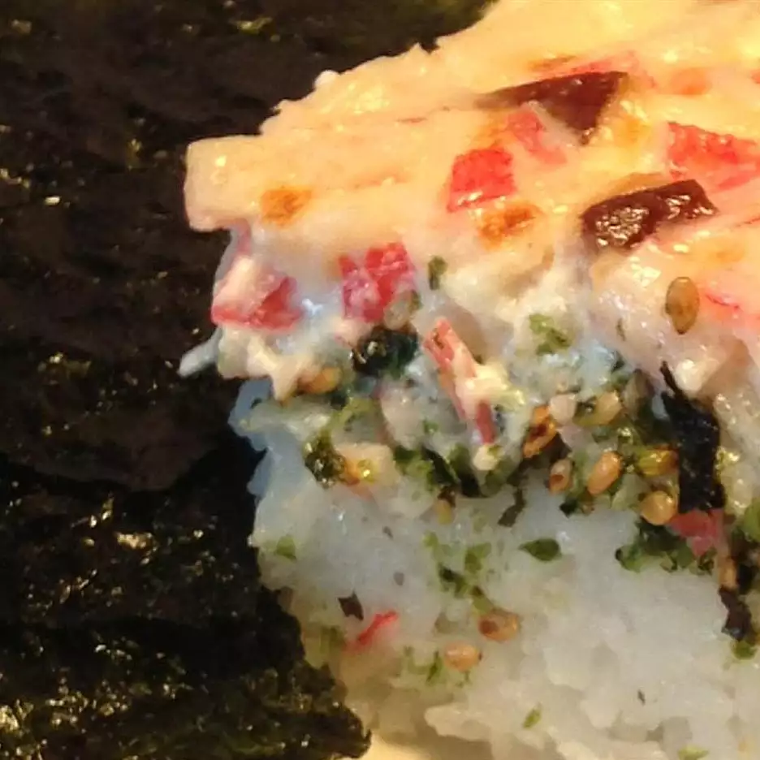

Return Home
Sushi Bake

This delicious Island-Style Fried Rice recipe was created by a user named "NovelApproach" from
the website All Recipes.
They say: Savory and satisfying, this easy-to-make dish is a local favorite in Hawaii. This is the only dish I
bring to parties anymore. Even at a smaller gathering, I get to take home a clean baking dish at the
end of the night. Like most casseroles, this dish is very forgiving, so don't sweat it if you can't
find an ingredient or aren't sure about the quantities.
Ingredients
So here's what you're gonna need to make this yummy lookling sushi bake!:
- 1 ounce dried shiitake mushrooms
- cooking spray
- 4 cups cooked short-grain rice
- 6 tablespoons aji nori furikake (seasoned seaweed and sesame rice topping)
- 1 (8 ounce) package imitation crabmeat, shredded
- ½ cup mayonnaise
- ½ cup sour cream
- 1 ounce tobiko (flying fish roe) (Optional)
- 1 kamaboko (Japanese fish cake), sliced into matchsticks
- 12 (2 ounce) packages seasoned Korean seaweed
Steps
Congrats! Now that you got everything, it's time for the magic! Luckily when making sushi bake,
nothing has to be precise or accurate as sushi bake is naturally a loveable mess (just like the fried
rice we made)! Here we go:
-
Set an oven rack about 6 inches from the heat source and preheat the oven's broiler.
-
Soak shiitake mushrooms in hot water until soft, 5 to 10 minutes.
-
Meanwhile, lightly grease a 9x13-inch baking pan or glass baking dish. Spread rice in
the prepared pan; sprinkle furikake evenly over the top.
-
Drain mushrooms and squeeze out excess water. Mix mushrooms, imitation crabmeat, mayonnaise, sour cream,
tobiko, and kamaboko in a large bowl. Spread over the furikake.
-
Broil in the preheated oven until the top is lightly browned, about 15 minutes.
Slice into 24 portions and serve in the pan. Spoon a generous mound onto a sheet of seaweed,
wrap loosely, and consume immediately.